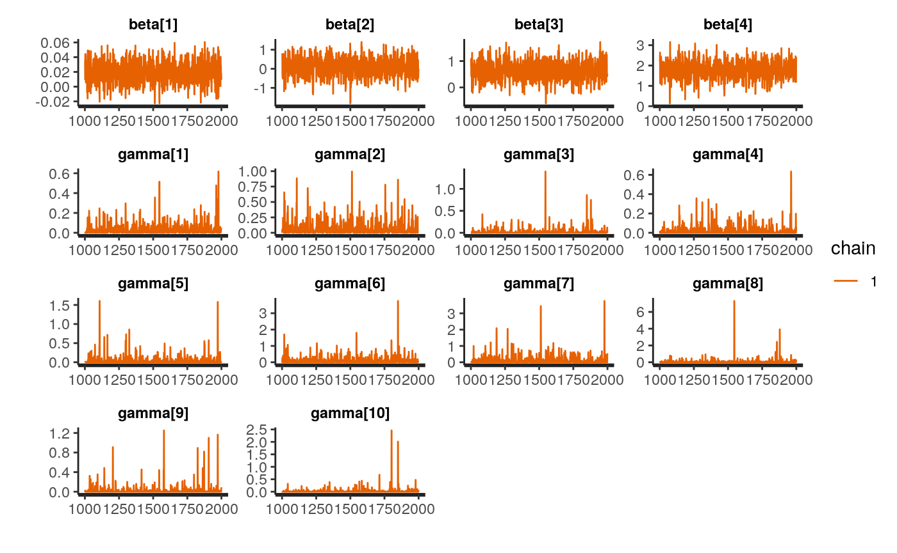
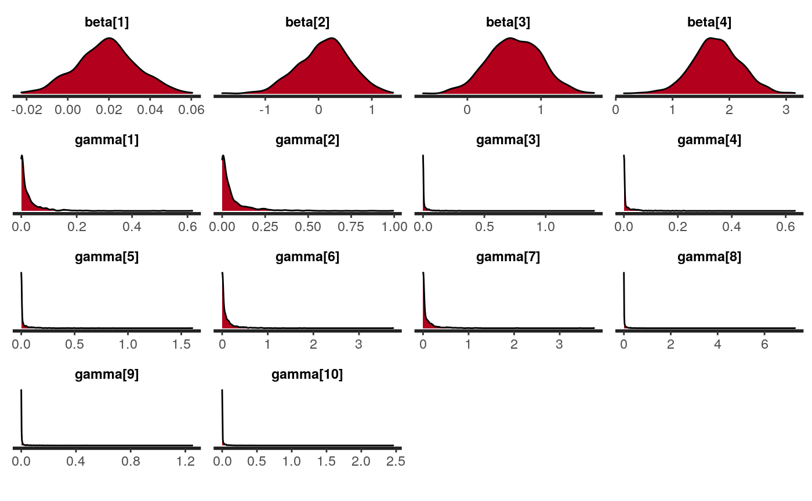
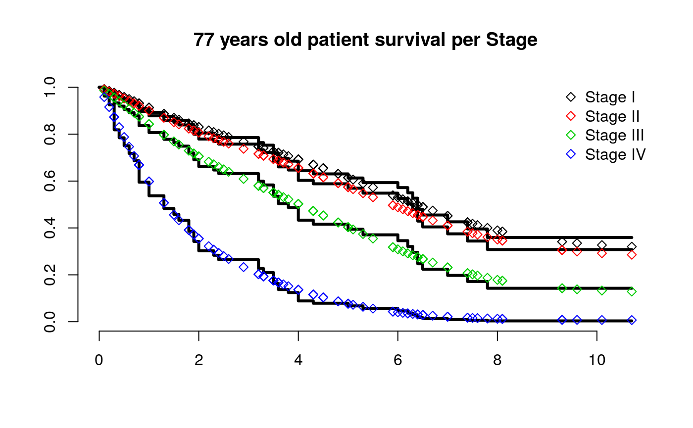

vignettes/spsurv.Rmd
spsurv.RmdThis vignette gives the instructions on how to fit the Bernstein polynomial (BP) based survival regression models using the unprecedent routines implemented in the spsurv package. In addition to this vignette, you can have access to a full description of the methodology (MSc dissertation) available at arXiv, check it out https://arxiv.org/abs/2003.10548. The spsurv::spbp function is the main routine of this package, as it allows to fit all BP related survival regression approaches presented in the dissertation. The acronym spbp refers to semi-parametric Bernstein polynomial based regression. The formula argument in spsurv::spbp makes use of the same structure available at the survival package in order to provide a familiar environment to the public. The development version can be found on github.com/rvpanaro/spsurv, it can be installed using:
library("devtools") devtools::install_github("rvpanaro/spsurv")
The spsurv package imports specific routines that provide the necessary support for internal calculations. During the installation, other dependencies are required, such as survival, loo, coda, rstan and MASS packages.
The target data set is passed to the spsurv::spbp function through a mandatory data.frame object class. Also, it is possible to switch between bayesian and mle approaches through the approach argument and between the ph, po and aft frameworks using the model argument. Naturally, prior choices are ignored if the approach argument is set to mle referring to maximum likelihood (ML) estimation; a warning is displayed in this case. In addition, consider extra arguments that may be passed directly to Stan software to apply rstan::optimizing (if ML method), or rstan::sampling if Markov chain Monte Carlo (MCMC) method, function control options. Both methods were applied under the rstan interface, see https://mc-stan.org/users/interfaces/rstan.
As mentioned in Chapter 4, the polynomial degree (highest basis order) can be chosen arbitrarily. In particular, the polynomial degree must be greater than zero, the default value of the polynomial degree \(m = \sqrt{n}\) is rounded to the greatest integer. Note that, the domain restriction for the BP, referred to as \(\tau\) here, is defined internally, see the discussion in Chapter 5. The reason for not allowing a user-defined \(\tau\) is to avoid an improper definition that would cause computing problems.
Considering the variety of settings that Stan can provide and the modeling options above, we believe that the package is flexible regarding user-defined applications of the BP based models. Beyond that, a class, namely spbp was created to extend some S3 methods that meet the R community need for printing, summarizing, and plotting functions. Accordingly, we had developed S3 methods extensions to accomplish these tasks such as the spsurv::print.spbp, spsurv::summary.spbp, spsurv::model.matrix.spbp and other summary printing extensions such as print.summary.bpph.bayes.
Further, there are some coding instructions on how to fit the semi-parametric models: Bernstein based proportional hazards (BPPH), Bernstein based proportional odds (BPPO), and Bernstein based accelerated failure time (BPAFT) models for right-censored data, under the Bayesian or frequentist approach. In the Bayesian perspective, Normal prior distributions are attributed to the regression coefficients while Log-Normal, Gamma, or Inverse Gamma can be attributed to the BP parameters. The default arguments for the spbp functions were set as follows:
spbp.default <- spbp(formula, degree, data, approach = c("mle", "bayes"), model = c("ph", "po", "aft"), priors = list(beta = c("normal(0,4)"), gamma = "lognormal(0,10)"), scale = TRUE, ...)
Consider formula an object of class formula, with the Surv object (survival package) for right-censored time-to-event data on the left side of \(\sim\) and the explanatory terms on the right; degree for the integer value of the BP degree, non-integer values are rounded to the greatest valid degree; data for a mandatory data.frame object with variables named in the formula; approach for either Bayesian or ML estimation methods, default is bayes; model proportional hazards (PH), proportional odds (PO) or accelerated failure time (AFT) for the modeling classes discussed in Chapter 2, default is ph; priors list of prior settings, which is ignored when mle, and scale for a logical value that indicates whether to apply the standardization discussed in Chapter 5. Recall that extra arguments can be passed to rstan::sampling (e.g. iter, chains, init), more details in https://mc-stan.org/users/documentation/.
Most statistical packages about survival regression returns an ANOVA table. In this sense, the object of class spbp follows the design provided in the survival package. The output corresponding to the ANOVA table can be obtained with:
library("KMsurv") data("larynx") library(spsurv) fit <- spsurv::spbp(Surv(time, delta)~ age + factor(stage), approach = "mle", data = larynx) summary(fit)
## Bernstein Polynomial based Proportional Hazards model
## Call:
## spbp.default(formula = Surv(time, delta) ~ age + factor(stage),
## data = larynx, approach = "mle", model = "ph")
##
## n= 90, number of events= 50
##
## coef exp(coef) se(coef) z Pr(>|z|)
## age 0.0193 1.0195 0.0144 1.34 0.180
## factor(stage)2 0.1720 1.1876 0.4626 0.37 0.710
## factor(stage)3 0.6585 1.9318 0.3556 1.85 0.064 .
## factor(stage)4 1.7991 6.0442 0.4288 4.20 2.7e-05 ***
## ---
## Signif. codes: 0 '***' 0.001 '**' 0.01 '*' 0.05 '.' 0.1 ' ' 1
##
## Likelihood ratio test= 19.6 on 4 df, p=6e-04
## Wald test = 22.6 on 4 df, p=2e-04One can reproduce this example by copying and pasting the indicated code in the R console. The output is as follows:
library("KMsurv") data("larynx") library(spsurv) fit <- spsurv::spbp(Surv(time, delta)~age + factor(stage), approach = "mle", data = larynx)
Consider that coef refers to the ML point estimates; exp(coef) is the point estimate for the hazard ratio; se(coef) represents the standard errors; z is the test statistic for the Wald test and p is the p-value of the Wald test. The estimated BP parameters, the value of the evaluated log-likelihood of the null (reference) model and the stan object can be obtained having access to the spbp class object elements. Moreover, apart from the fit object, it is also possible to obtain the matrix of covariates, the covariance matrix and the likelihood value. This can be done using the following code:
fit$coefficients
## age factor(stage)2 factor(stage)3 factor(stage)4 gamma1
## 1.926946e-02 1.719545e-01 6.584531e-01 1.799095e+00 1.687151e-02
## gamma2 gamma3 gamma4 gamma5 gamma6
## 4.164110e-02 8.170170e-50 1.401060e-02 4.677284e-02 9.401934e-34
## gamma7 gamma8 gamma9 gamma10
## 1.331014e-01 1.189283e-62 4.517613e-112 3.128413e-131head(model.matrix(fit))
## age factor(stage)2 factor(stage)3 factor(stage)4
## 1 77 0 0 0
## 2 53 0 0 0
## 3 45 0 0 0
## 4 57 0 0 0
## 5 58 0 0 0
## 6 51 0 0 0diag(fit$var)
## age factor(stage)2 factor(stage)3 factor(stage)4
## 0.0002064355 0.2139848904 0.1264739037 0.1838831112fit$loglik
## [1] -149.8360 -140.0512From the Bayesian point of view, the spbp class contains posterior summary statistics such as the mode, median, mean and standard deviation, along with 95% HPD interval based on the posterior density. Note that the arguments passed after data are considered Stan specific control parameters. For instance, the argument chain allows to choose the number of chains in the MCMC . Other settings such as iter and warmup are also flexible and might be set at convenience. The user can simply type in the R console the code??rstan::sampling" for help. The following R console outcome refers to the Bayesian estimation for the larynx data set:
fit <- spsurv::spbp(Surv(time, delta)~age + factor(stage), approach = "bayes", data = larynx, iter = 2000, chains = 1, warmup = 1000, cores = 1)
##
## SAMPLING FOR MODEL 'spbp' NOW (CHAIN 1).
## Chain 1:
## Chain 1: Gradient evaluation took 3.7e-05 seconds
## Chain 1: 1000 transitions using 10 leapfrog steps per transition would take 0.37 seconds.
## Chain 1: Adjust your expectations accordingly!
## Chain 1:
## Chain 1:
## Chain 1: Iteration: 1 / 2000 [ 0%] (Warmup)
## Chain 1: Iteration: 200 / 2000 [ 10%] (Warmup)
## Chain 1: Iteration: 400 / 2000 [ 20%] (Warmup)
## Chain 1: Iteration: 600 / 2000 [ 30%] (Warmup)
## Chain 1: Iteration: 800 / 2000 [ 40%] (Warmup)
## Chain 1: Iteration: 1000 / 2000 [ 50%] (Warmup)
## Chain 1: Iteration: 1001 / 2000 [ 50%] (Sampling)
## Chain 1: Iteration: 1200 / 2000 [ 60%] (Sampling)
## Chain 1: Iteration: 1400 / 2000 [ 70%] (Sampling)
## Chain 1: Iteration: 1600 / 2000 [ 80%] (Sampling)
## Chain 1: Iteration: 1800 / 2000 [ 90%] (Sampling)
## Chain 1: Iteration: 2000 / 2000 [100%] (Sampling)
## Chain 1:
## Chain 1: Elapsed Time: 2.38067 seconds (Warm-up)
## Chain 1: 2.36772 seconds (Sampling)
## Chain 1: 4.74839 seconds (Total)
## Chain 1:## Warning: Relative effective sample sizes ('r_eff' argument) not specified.
## For models fit with MCMC, the reported PSIS effective sample sizes and
## MCSE estimates will be over-optimistic.## Warning:
## 3 (3.3%) p_waic estimates greater than 0.4. We recommend trying loo instead.As with the ML estimation, the summary method is extended to the spsurv::spbp class when applying to a Bayesian fit. Along with the regression estimates, this output also contains descriptive statistics for the posterior hazard ratio denoted by _exp (in the console output) and the diagnosis statistics from the loo package. The effective sample size n_eff gives an estimate of the independent draws from the posterior distribution, and Rhat referred to as the potential scale reduction statistic, is one of the useful ways to monitor whether a chain has converged to the equilibrium distribution. This statistic measures the ratio between the average variation of the samples within each chain and the variation of the combined samples in the chains; if the chains have not converged to a common distribution, this statistic will be greater than one. It is worth noting that all, the information provided by the Stan output, including warnings, is passed to the final user. One can have access to the stanfit object with the fit$stanfit command. In particular, one can have access to built-in plot functions and even to a shiny app (details in https://shiny.rstudio.com/ developed by Stan developer’s team. The summary outcome is as follows:
summary(fit)
## Bayesian Bernstein Polynomial based Proportional Hazards model
##
## Call:
## spbp.default(formula = Surv(time, delta) ~ age + factor(stage),
## data = larynx, approach = "bayes", cores = 1, iter = 2000,
## chains = 1, warmup = 1000, model = "ph")
##
## n= 0, number of events= 0
##
## mode mean se_mean sd 50% n_eff Rhat lowerHPD
## age 0.0201 0.0189 0.00046 0.0145 0.0191 993 0.999 -0.00911
## factor(stage)2 0.2448 0.1120 0.01740 0.4819 0.1467 767 1.001 -0.84032
## factor(stage)3 0.5840 0.6405 0.01272 0.3559 0.6398 783 0.999 0.02740
## factor(stage)4 1.6732 1.7712 0.01510 0.4219 1.7687 781 0.999 1.05130
## upperHPD
## age 0.0467
## factor(stage)2 1.0030
## factor(stage)3 1.4031
## factor(stage)4 2.7070
## ---
## mean_exp median_exp sd_exp lowerHPD_exp upperHPD_exp
## age 1.02 1.02 0.0148 0.991 1.05
## factor(stage)2 1.25 1.16 0.5946 0.293 2.43
## factor(stage)3 2.02 1.90 0.7320 0.769 3.38
## factor(stage)4 6.42 5.86 2.8349 2.009 12.26
## ---
##
## Computed from 1000 by 90 log-likelihood matrix
##
## Estimate SE
## elpd_waic -149.9 9.5
## p_waic 9.6 1.0
## waic 299.8 19.0
##
## 3 (3.3%) p_waic estimates greater than 0.4. We recommend trying loo instead.
##
## Computed from 1000 by 90 log-likelihood matrix
##
## Estimate SE
## elpd_loo -149.9 9.5
## p_loo 9.6 1.0
## looic 299.9 19.0
## ------
## Monte Carlo SE of elpd_loo is 0.1.
##
## All Pareto k estimates are good (k < 0.5).
## See help('pareto-k-diagnostic') for details.The next code chunk shows the code for trace and density plotting and to give access to the shiny app from the shinystan package shinystan. Figures illustrate the trace plot and the density plot of the BPPH for the larynx data set. The graphs show unimodal posterior densities and well behaved chains with good mixing, this is a good behavior indication.


shinystan::launch_shinystan(fit$stanfit)
Not least, a S3 method had to be created rather than extended. The survivor method was created to accomplish the calculation of the survival function evaluated in each time point. The goal is similar to the survival::survfit S3 method, that could be extended instead. The difference is that spbp classes allows both Bayesian and frequentist approaches. The following code was used to generate Figure:
## CoxPH model fitcoxph <- survival::coxph(Surv(time , delta)~age + factor(stage), data = larynx) ## Determine the groups of patients newdata <- data.frame(age =c(77,77,77,77), stage = c(1,2,3,4)) ## survfit Breslow estimator breslowsurv <- survival::survfit(fitcoxph, newdata = newdata) ## spbp point-wise estimate spbpsurv <- spsurv::survivor(fit, newdata = newdata) plot(breslowsurv, bty = "n", lwd = 3, main = "77 years old patient survival per Stage") points(spbpsurv$time, spbpsurv$survival1, col = 1, pch = 23) points(spbpsurv$time, spbpsurv$survival2, col = 2, pch = 23) points(spbpsurv$time, spbpsurv$survival3, col = 3, pch = 23) points(spbpsurv$time, spbpsurv$survival4, col = 4, pch = 23) legend("topright", c("Stage I", "Stage II", "Stage III", "Stage IV"), pch = 23, bty = "n", col = 1:4)

The content of this vignette introduces the spsurv package. Here, the analysis was dedicated to illustrating, in practice, the commands implemented in the proposed package spsurv. We still have work to do to improve and update this tool, however, the present version is ready for the main statistical study in the field of survival analysis. The routines presented in this dissertation are unprecedented. Many efforts with regard to the instruction the routines documentation were carried out concurrently with the spsurv package implementation. This document is part of the content submitted to CRAN. The package is also in public use and is available at the github development platform, the link is: https://github.com/rvpanaro/spsurv.